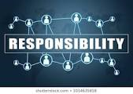

Credit cards are like a double-edged sword. Used properly, they can dramatically increase your finances and can prove to be a valuable asset to your arsenal. If used irresponsibly, however, can devastate your finances, engulfing you in debt with an incredibly large interest rate on top. Click on the image to be taken to learn more about credit cards.
Debit cards are essentially a physical card that gives you access to your bank account. They eliminate the need for you to carry checks or cash, making it convenient for the user to purchase items. It typically contains daily purchase limits, so you will get a warning message if a large transaction occurred. Click the image to learn more.
Differences between Credit and Debit Cards
Credit cards are cards that allow you to borrow money against a line of credit, or the credit card company. There is usually a limit to how much the user can spend per month and can be as low as $100 for first-time credit card users. The bank for your expenses used by the card, and at the end of the month, you pay the bank back. Unlike debit cards, credit cards have interest that accrue over left over balance each month. These interest rates are incredibly high, sometimes as much as 25%! As a word of advice, make sure you DO NOT have any outstanding balance by the end of the month, or in an emergency, as little as possible. It can snowball into an insurmountable debt within just a few months!
Debit cards, on the other hand, do not come from a bank, but rather your own account. This being said, it makes it much more harder to overspend during the course of the month, given that you can see the money flowing away from your own bank account each time, whereas in a credit card, you see it at the end of the month. There is a unique PIN that you will have to enter to do a transaction with the debit card. You do not have to pay interest on your purchases, and your credit history remains unaffected.
Responsible Use
Making responsible decisions and taking the right paths when it comes to your credit and debit cards are critical in making sure you do not enter into an unforgiving debt. Do not get me wrong, these two cards are incredible assets to your financial arsenal, but can also sabotage all your plans at the same time. Here are some quick tips to make sure you do not stray too far into debt...
- Keep your credit card at home! This way it you have to pay with either your debit card or cash for any purchase, making you more aware on how much you are spending.
- Create a budget that includes credit card monthly payments. You can set aside a certain amount of money each month so you stay on top of the ball.
- Credit Card rewards are very underrated! Buying a proper credit card with quality rewards can make your financial and personal life much easier!
- Debit cards are best if you do not want to spend too much money. While credit cards are useful for large purchases, debit cards are better for smaller ones.